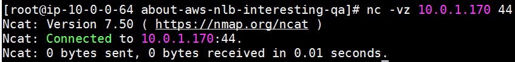
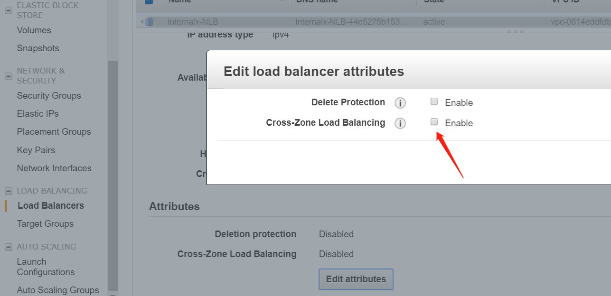

几个关于AWS NLB的有趣问题
0x00 前言
分享几个关于NLB的有趣问题。
0x01 架构概述
- 我有一个internal的NLB（跨两个AZ），监听33端口
- NLB后端有1个EC2实例（实例B），监听22端口
- 我还有一个EC2实例作为客户端（实例A）
0x02 相关问题
2.1 实例B不能正常访问NLB，但是实例A可以
这个最开始我还觉得奇怪，手动测试了一下，确实是这样：
实例B（10.0.0.64是实例B的IP，10.0.1.170是NLB的IP）：1
2
3
4
5
6
7
8[ec2-user@ip-10-0-0-64 ~]$ nc -vz 10.0.1.170 33
Ncat: Version 7.50 ( https://nmap.org/ncat )
Ncat: Connection timed out.
[ec2-user@ip-10-0-0-64 ~]$ nc -vz 10.0.0.64 22
Ncat: Version 7.50 ( https://nmap.org/ncat )
Ncat: Connected to 10.0.0.64:22.
Ncat: 0 bytes sent, 0 bytes received in 0.01 seconds.
[ec2-user@ip-10-0-0-64 ~]$
实例A访问NLB和实例B都是可以正常访问的：
1 | [2019-11-01 11:53.25] ~ |
请教了一下大佬，这种现象其实是正常的，NLB做的流量转发会把目的IP地址转过去，如果我src IP与dst的IP相等的话，那自然会被丢弃掉，这也就造成了，如果我在后端实例上访问NLB的端口会出现time out的现象。
此外，NLB的官方文档也有对此部分的说明，可以参考：Troubleshoot Your Network Load Balancer中“Connections time out for requests from a target to its load balancer”部分。
上面我是通过实例ID注册的，那我如果通过IP注册（这也是文档中提到的解决方法之一）的话，就不会有这个问题了。效果如下：1
2
3
4[root@ip-10-0-0-64 about-aws-nlb-interesting-qa]# nc -vz 10.0.1.170 44
Ncat: Version 7.50 ( https://nmap.org/ncat )
Ncat: Connected to 10.0.1.170:44.
Ncat: 0 bytes sent, 0 bytes received in 0.01 seconds.

2.2 NLB如果不开通“Cross-Zone Load Balancing”功能，流量是不会跨AZ转发至后端EC2实例的
这个场景比如说，我有一个NLB跨了两个AZ（cn-north-1a，cn-north-1b），然后我后端仅有1台EC2实例（在cn-north-1b中）。如果我访问cn-north-1a的NLB IP，则会出现访问超时的现象，而访问cn-north-1b则不会有这个问题。这是因为我如果没开“Cross-Zone Load Balancing”功能的话，流量是不会跨AZ转发的。
开通“Cross-Zone Load Balancing”功能的方法也很简单，console上点一下：

完事现在支持跨AZ负载均衡就没啥问题了，当然如果不考虑高可用NLB只有一个AZ的话也没有这个问题了。
(以上内容目前仅测试了internal NLB)